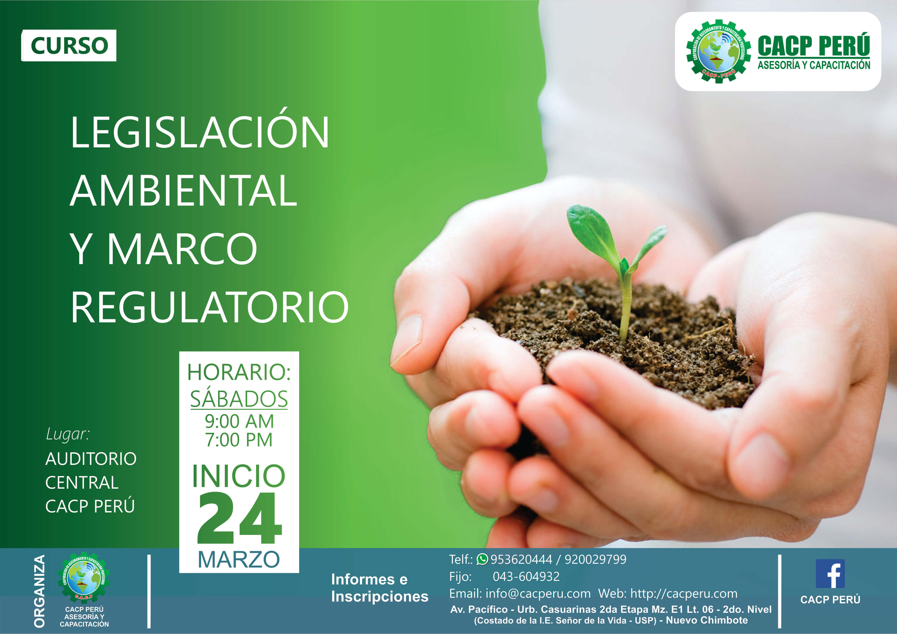
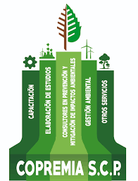

Legislacion Ambiental
¿Que es la Legislación Ambiental?
La legislación ambiental o derecho ambiental, es un complejo conjunto de tratados, convenios, estatutos, reglamentos, y el derecho común que, de manera muy amplia, funcionan para regular la interacción de la humanidad y el resto de los componentes biofísicos o el medio ambiente natural, hacia el fin de reducir los impactos de la actividad humana, tanto en el medio natural y en la humanidad misma.

¿Como surge la Legislación Ambiental?
La legislación ambiental surge de la necesidad de responder ante la sociedad a los problemas ambientales que se presentan, ya que el hombre de siempre ha pretendido dominar la naturaleza. El instruir e inducir al ser humano para que modere su comportamiento con el fin de proteger la vida, es tarea de la educación, pero exigir ese comportamiento a través de la norma y la coacción son propios del derecho.
En sí, tiene su aparición a nivel internacional en el año 1972 a raíz de la promulgación de la Declaración de Estocolmo sobre el Medio Humano. Se ve desarrollado por la Carta de la Tierra del año 1982, la Declaración de Río sobre el Medio Ambiente y el Desarrollo del año 1992 y la reciente Declaración de Johannesburgo del año 2002.

¿Cuales son las Funciones de la Legislación Ambiental?
Definir que acciones o relaciones son consideradas (jurídicamente) como generadores de impactos negativossignificativos sobre el derecho a un ambiente adecuado y que requieren de la regulación legal del Estado. Identificar las acciones que serán objeto de regulación legal, por implicar riesgos al goce del derecho al ambiente adecuado y por ser problemas que no pueden ser resueltos sin la intervención legal del Estado.
Definir los principios mediante los cuales se habrá de formular, conducir y evaluar la política ambiental, así como los instrumentos y procedimientos para su aplicación.
Regular el ejercicio de las facultades de las autoridades de la Administración Pública, en materia de conservación del medio ambiente, protección ecológica y restauración del equilibrio ecológico.
Conservar y restaurar el equilibrio ecológico, así como prevenir los daños al ambiente, de manera que sean compatibles la obtención de beneficios económicos y las actividades de la sociedad con la conservación de los ecosistemas.
Establecer las medidas de control, de seguridad y las sanciones administrativas que correspondan, para garantizar el cumplimiento y la aplicación de las leyes y de las disposiciones que de ella se deriven.
Regular la responsabilidad por daños al ambiente y establecer los mecanismos adecuados para garantizar la incorporación de los costos ambientales en los procesos productivos; y establecer el ámbito de participación de la sociedad en el desarrollo y la gestión Ambiental.
- Problemas de contaminación ambiental y de deterioro de las condiciones del medio.
- La conservación de los recursos naturales, de tal forma que se asegure el aprovechamiento sostenible de dichos recursos.
Se habla por lo tanto de protección ambiental y conservación de los recursos naturales. Aunque es posible diferenciar ambas áreas (cosa que también ocurre en la economía ambiental), los principios y objetivos se encuentran estrechamente entrelazados. Lo que se requiere sin duda es asegurar que las condiciones del ambiente en el cual se desarrolla la vida humana reúnan las condiciones para proteger la salud de las personas y la propia viabilidad de los ecosistemas en el mediano y largo plazo. En consonancia con lo expuesto, la Ley General del Ambiente (Ley N° 28611) recoge estos principios y establece como ámbito de aplicación de dicha norma las dos materias anteriormente señaladas.
.jpg)
Informacion obtenida por las paginas:
-
https://www.temasambientales.com/2017/03/legislacion-ambiental.html
-
http://www.globalstd.com/networks/blog/legislacion-ambiental-en-mexico
-
https://www.aec.es/web/guest/centro-conocimiento/legislacion-ambiental
-
http://www.ismedioambiente.com/agenda/la-legislacion-ambiental